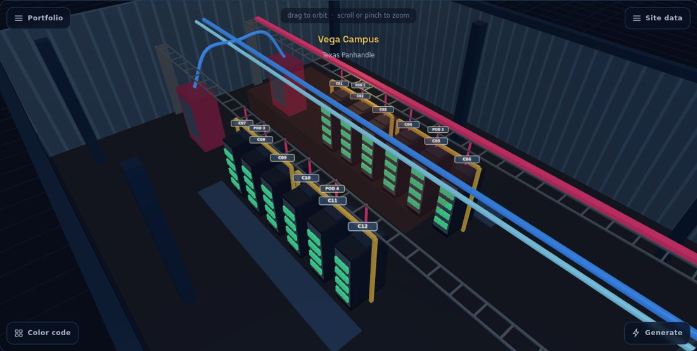
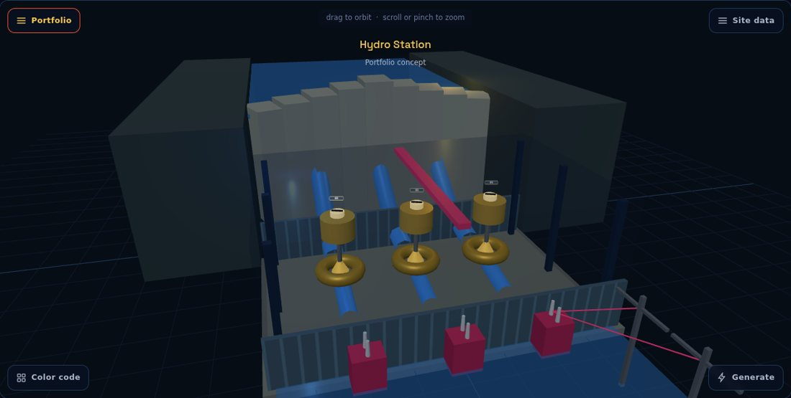

Yurt 8 is one system that watches every project in the portfolio, generates the next design move on demand, and learns from both, so each pass gets faster, cheaper, and sharper. It is built so leadership sees dollars and days move every single month, and it is built to Hut 8's mission: scaling AI, and using AI to scale itself. The filter for everything in it: keep it simple, cut cost, cut time, raise quality, built to scale.
Domino's earned trust by letting people watch the pizza move. Owners deserve the same view of their capital projects. Every project lives on one chronological tracker, wired to the live data that matters at each stage. Not a status slide. The live state of the work.
Running under every stage: clash detection, BIM, information management, model management, user management, project management, and project delivery. I would also add cost, schedule, safety and QA/QC, commissioning and handover, and energy tracking; those five are flagged for your review.


Vendors do day to day design in Autodesk Construction Cloud, simplified through clean permissions. For Hut 8 it is a limited tool on purpose: a data source we mine by API. Owners do not need forty modules. They need the tracker.
HUT8-[PROJECT] ├ 01-WIP each vendor's own working area ├ 02-SHARED coordinated, clash reviewed ├ 03-PUBLISHED approved to build, read only └ 04-ARCHIVE every version, kept automatically
ISO 19650, minus the ceremony. Every asset gets one ID at design and keeps it forever: in the model, on the tag, in the sensor feed. IoT site monitoring flows into Operations through the same JSON. The over-engineered version that never survives an American job site is exactly what this is not.
Build the tool, build the team, then maintain and scale both. Every month closes with one page for leadership: dollars moved, days moved, and which scenario the data came from, alpha, beta, or live. If a month cannot show both numbers, that month failed and I will say so plainly.
ACC mining live on one active project. Tracker alpha stands up. Existing contractors and contracts keep their tools; Yurt 8 conforms to the work. Checkpoint: first clash caught on screen, priced against the change order it replaced.
Model feeds, financials, and clash surfacing across the active portfolio. Procore and schedule connections land. Checkpoint: avoidable slowdowns identified and priced, monthly.
Test fits and sizing on the real cabinet library. Work that took weeks and third party fees now takes seconds. Checkpoint: third party design fees eliminated, itemized per run.
Generate moves into the browser; anyone Hut 8 authorizes can run it without Revit. Hire two arrives. Checkpoint: design cycle time, before vs after, in days.
Knowledge bases go live, gated by review, tied to the codes and standards Hut 8 flags. Checkpoint: year one savings tally, line by line.
Every active project on the tracker. IoT monitoring lights up Operations. New projects start with generative site selection from day one. Checkpoint: change order rate vs baseline, portfolio wide.
Site selection through operations on one loop. Every review sharpens generation; every generation feeds the lakes. Checkpoint: year two tally, and year three priced from real data.
On meetings: meetings are for decisions. Status lives on the tracker. No decision, no meeting.
On the team: one, then three. Every hire a renaissance engineer who rejects role boundaries. Critical thought, delivered results, first principles, real teamwork. No seat fillers, ever. The system prevents chaos; the team stays drilled for forest fires anyway.
Why these savings are real at Hut 8's scale. {{PDF_HUT8_ANCHOR}}
Show my homework. The interactive demo opens the hood: the exact prompt that drove my AI build agents, the architecture, and the sources. I built this in two days with a multi agent setup I designed, and I can build the same without AI: HTML, Python, C#, C, and .NET are home turf. Point me outside my comfort zone and the same financial logic arrives; I learn fast, and I stay motivated and curious.
The 3D in the demo: web native, ships as one file, runs offline, no installs, no servers. When simulation depth earns its cost, the path is NVIDIA Omniverse and the open source OpenUSD ecosystem.
{{PDF_SOURCES}}